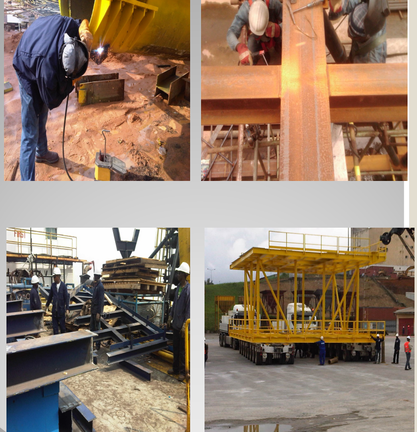
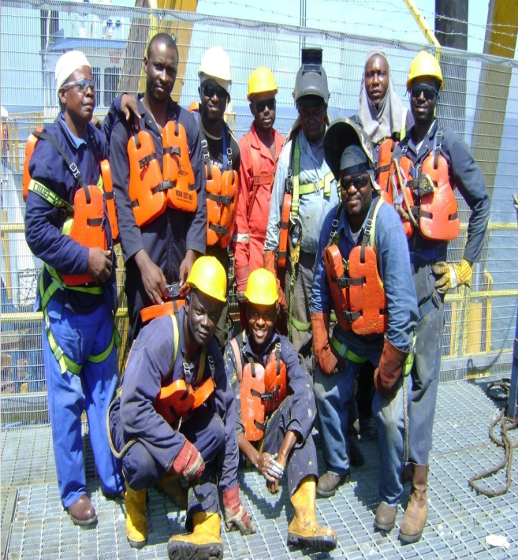

HE-VINE MULTI SERVICES LTD
FACILITIES AND EQUIPMENT
He-Vine Multi Services Ltd is an indigenous engineering company duly registered under the laws of Nigeria to pool expertise of very experienced and exposed engineers and technicians to provide procurement, fabrication and manpower supply services. He-Vine Multi Services Ltd is also registered with the Department of Petroleum Resources to render the same services to Oil and Gas sectors.

He-Vine Multi Services Ltd was set up and managed
by highly experienced personnel, with
wide ranging international experience in the oil
industry, to operate in accordance with
internationally acceptable standards and
practices to provide competitive, versatile and
reputable services to clients in the oil industry
at very competitive cost.
The company operates on a consistent identity
with the highest standards of reliability,
and quality of service as weapon for success,
sustenance, growth and also the guarantee
for the continued existence of any business.
EXPERIENCE
Swamp platforms, decks and extensions Swamp pipeline & flowline construction and leak
repairs Hookup and Risers installations Flow stations Repairs and Maintenance Tripods
fabrications and wellhead decks Abiteye Production Facility MBD – 810 Surge Tank
Replacement Fabrication of Meren WIP Platform, fuel gas System Deck Extension & skid Steel
Fabrication & installation of Meren Water Injection Platform & workshop Extension Main Deck
Ajapa Wellhead Platform C construction of buried Pipeline At Ossu 14 Location Fabrication
installation of Moni Pulo Gas Lift Project Fabrication of Universal /SIPEC IN_LET Manifold
and PIG LAUNCHER And PIG RECEIVER.
As a Company recently incorporated
in Nigeria, HE-VINE Multi Services Limited does not have a long list of experience to the
Company’s respective name. However, the principal individuals providing management,
guidance and leadership to the organization have a robust history of performing work in Nigeria,
West Africa and International Oil and Gas construction market.
HE-VINE Multi Services Limited
intends to merge and consolidate the international and project quality experience of our
respective managers with the local knowledge and experience of the Project Sponsor and
Project Director, respectively. We are confident that this approach will provide Company with
reliable results and execution of project activities in a timely and safe manner. But it is pertinent
to highlight that in the year, 2009, HE-VINE Multi Services Limited successfully installed a Well
platform for WECO Engineering & Const. Nigeria Limited for BRITTANIA –U at Ajapa Field.
Our Partners
WECO ENGINEERING AND CONSTRUCTION COMPANY LIMITED
KOHASA ENGINEERING COMPANY LIMITED
CONTOUR ENGINEERING LIMITED
LIVINGPROOF CONTRACTING NIGERIA LIMITED
PORTHARCOURT REFINING COMPANY LIMITED

Technical Staff
